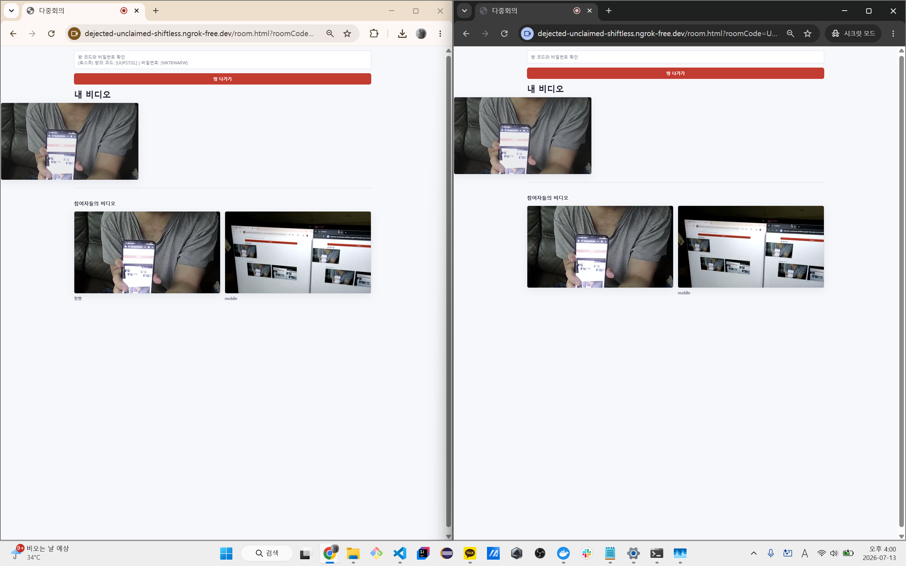
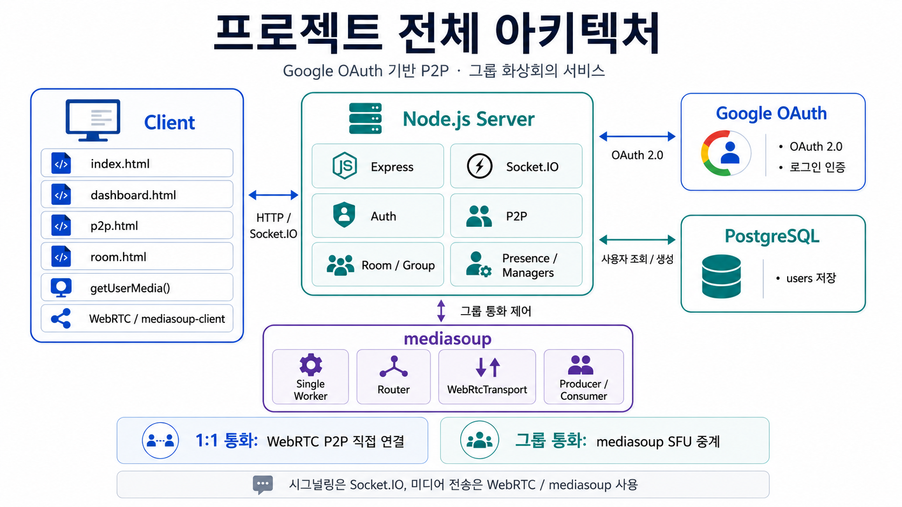
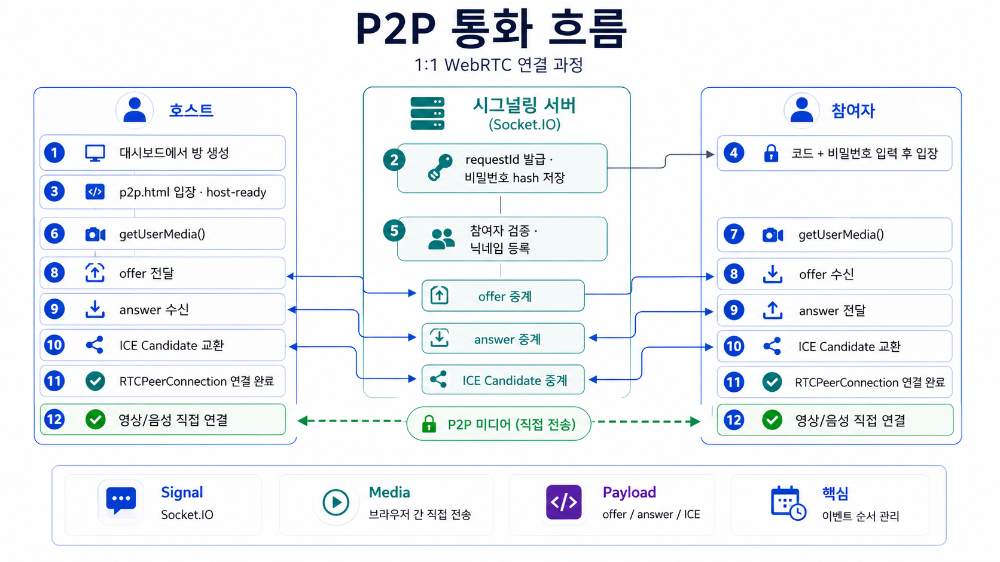
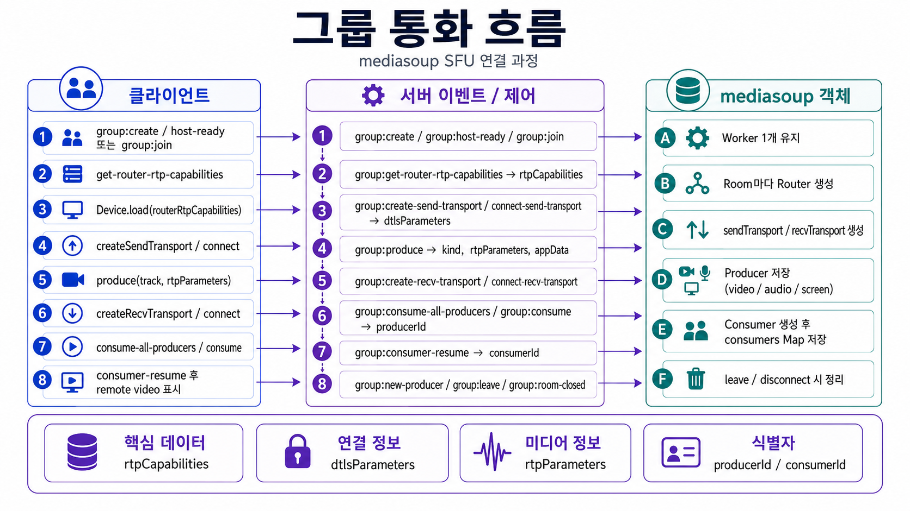
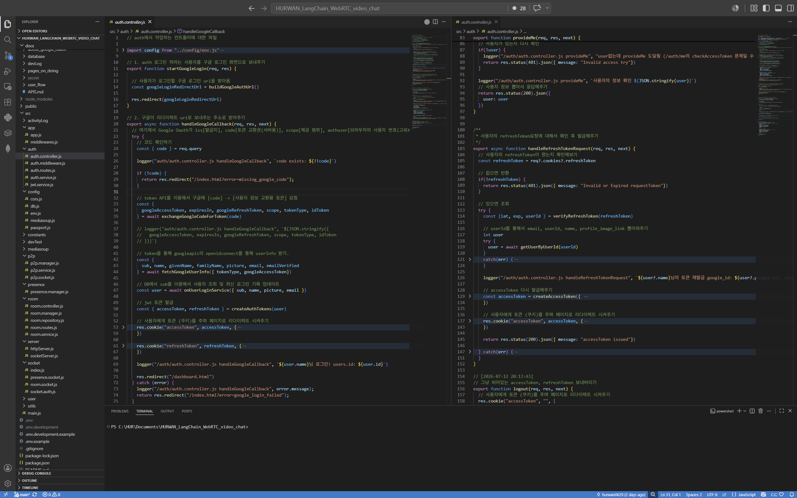
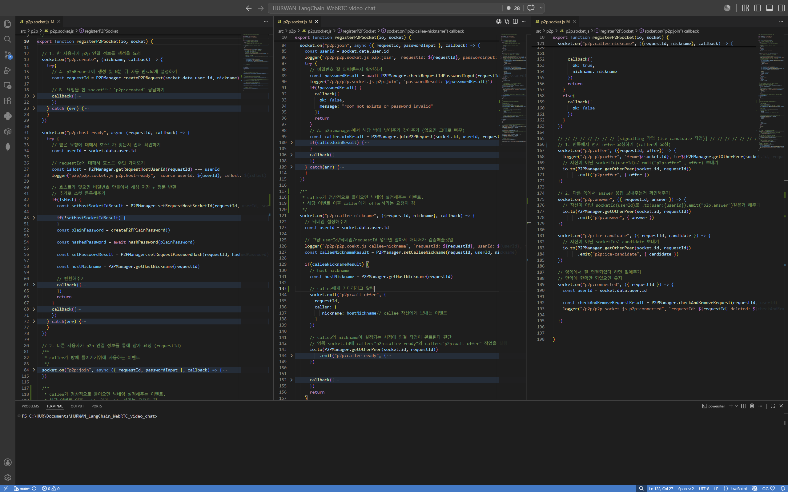
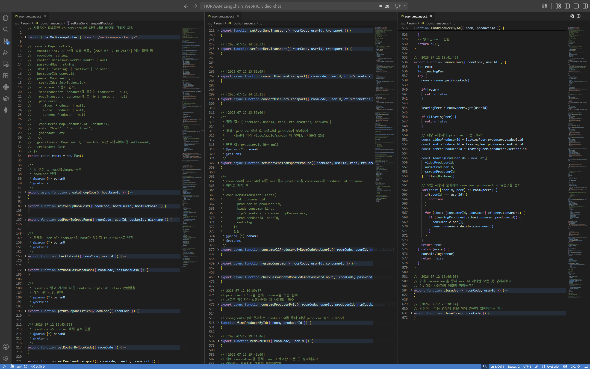
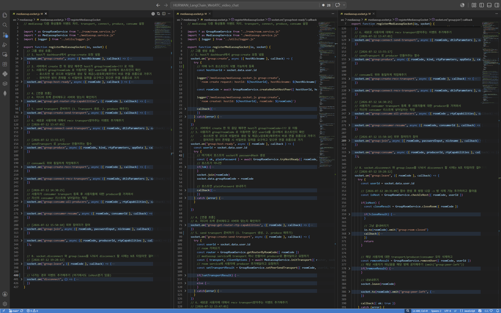
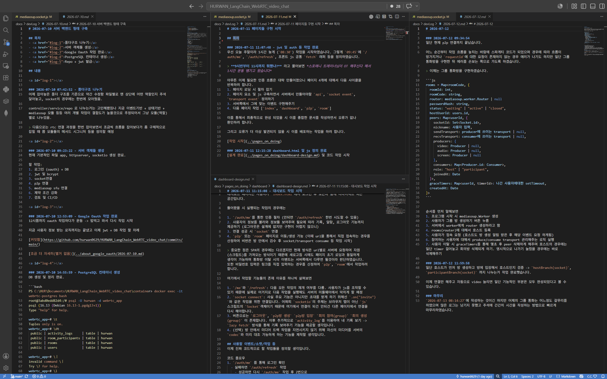
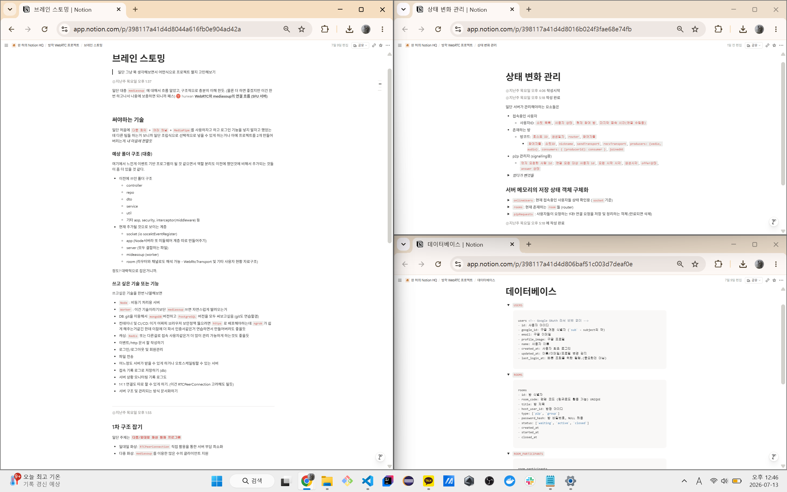

Google OAuth 기반
P2P · 그룹 화상회의 서비스
RTCPeerConnection 기반 1:1 통화와 mediasoup SFU 기반 그룹 통화를 구현한 실시간 화상회의 프로젝트
주요 기능
- Google OAuth 로그인
- JWT 기반 인증 / 인가
- 1:1 P2P 통화
- 그룹 통화 SFU 중계
- 실시간 상태관리와 이벤트 처리
핵심 기술
Socket.IO는 시그널링, WebRTC는 P2P 미디어 전송, mediasoup는 그룹 통화 미디어 중계에 사용했다.

assets/00-service-screen.png 파일을 넣으면 자동으로 표시됩니다.
개발 타임라인
07/08 ~ 07/13
07/08 ~ 07/10
users 테이블 연동07/11 ~ 07/13
onlineUsers / p2pRequests, offer / answer / ICE 흐름 구현초기 설계 포인트
필요한 항목만 펼쳐서 볼 수 있게 구성했다.
P2P 통화
RTCPeerConnection직접 사용Socket.IO는 시그널링 전용- offer / answer / ICE candidate 교환
그룹 통화
- Mesh 대신
mediasoupSFU Worker / Router / TransportProducer / Consumer상태관리
인증 / 인가
- Google OAuth 로그인
accessToken / refreshToken- HTTP와 Socket.IO 인증 공유
서버 메모리 상태
onlineUsersp2pRequestsrooms
DB 설계
users실사용rooms,room_participants,activity_logs설계/SQL 작성
확장 방향
- Redis 기반 상태 저장
- TURN 서버
- 예외 처리 보강
- 운영 환경 배포
프로젝트 전체 아키텍처

assets/architecture.png 파일을 넣으면 표시됩니다.
서버 프로젝트 구조와 역할 분리
onlineUsers / socketUsers 관리
├─ SOCKETp2p → P2P 요청 상태, signaling 이벤트 처리
├─ SOCKETroom → 그룹 방, peer, transport, producer/consumer 상태 관리
├─ SOCKETmediasoup → worker, transport, group socket 이벤트
├─ INFRAconfig → env, db, cors, mediasoup config
├─ INFRAutils → logger, helper
├─ INFRAcontainer/ → PostgreSQL 컨테이너 관련 구조
├─ INFRAsql/ → 스키마 SQL
└─ INFRAdocker-compose.yml → DB 컨테이너 정의색상 구분
APP 일반 애플리케이션 계층 / SOCKET 실시간 소켓 서비스 계층 / INFRA 실행 환경 및 인프라 계층
핵심
Manager 계층과 Socket Event 계층이 프로젝트의 핵심이다.
.env 구성과 사용 위치
SERVER / GOOGLE / DATABASE
PORT,HOST_IP,PUBLIC_PATH→ 서버 실행 주소CLIENT_ID,CLIENT_SECRET,CALLBACK_PATH,CLIENT_ORIGIN→ Google OAuth URL / callbackDB_HOST,DB_PORT,DB_NAME,DB_USER,DB_PASSWORD→ PostgreSQL pool 생성- 사용 위치:
src/config/env.js,src/auth/auth.service.js,src/config/db.js
JWT / P2P
ACCESS_SECRET,REFRESH_SECRET,COOKIE_MAX_AGE,SAME_SITE,SECURE→ 토큰 발급과 쿠키 옵션P2P_ROOM_ID_LENGTH,P2P_REQUEST_TIMEOUT_MS,P2P_PASSWORD_LENGTH→ P2P 요청 생성과 만료 처리- 사용 위치:
src/auth/jwt.service.js,src/auth/auth.controller.js,src/p2p/p2p.manager.js
GROUP / MEDIASOUP
GROUP_ROOM_CODE_LENGTH,GROUP_ROOM_PASSWORD_LENGTH→ 그룹 방 코드 / 비밀번호MEDIASOUP_LISTEN_IP,ANNOUNCED_ADDRESS,RTC_MIN_PORT,RTC_MAX_PORT→ transport listen 정보INITIAL_AVAILABLE_OUTGOING_BITRATE등 → transport 옵션- 사용 위치:
src/mediasoup/worker.js,src/mediasoup/mediasoup.service.js
LAN TEST / NGINX
HOST_IP=0.0.0.0,MEDIASOUP_LISTEN_IP=0.0.0.0ANNOUNCED_ADDRESS=<LAN IP>→ 같은 네트워크 기기에서 접속- Nginx로 정적 파일 제공 및 동일 네트워크 테스트 환경 구성
인증 / 인가 흐름
HTTP 기준 흐름
/auth/loginGoogle 로그인 redirectsub, email, nameloadMe()는 /auth/me 호출에 실패하면 /auth/refresh 후 다시 /auth/me를 요청한다.
Socket.IO 기준 흐름
socket.data.user인증 사용자 저장onlineUsers 추가로그인한 사용자만 dashboard.html, p2p.html, room.html과 실시간 이벤트를 사용할 수 있다.
서버 메모리 상태관리
src/presence/presence.manager.jsonlineUsers + socketUsers
현재 접속중인 사용자와 다중 socket을 관리한다. socketUsers는 역인덱스 역할을 한다.
src/p2p/p2p.manager.jsp2pRequests
1:1 통화 요청 상태를 저장한다. 비밀번호는 hash로 저장하고, 타임아웃으로 정리한다.
src/room/room.manager.jsrooms
그룹 회의방의 Router와 Peer별 미디어 객체를 관리한다.
P2P 통화 흐름

assets/p2p-flow.png 파일을 넣으면 표시됩니다.
그룹 통화에서 서버가 관리하는 것
Single Worker
서버 시작 시 1개 생성
Router
그룹 방마다 생성
Peer
socketIds, nickname, role
Transport
sendTransport / recvTransport
Producer
video / audio / screen
Consumer
상대방 producer 소비
Room 내부 구조
정리 함수
removeUser() → closeUser() → closeRoom()
그룹 통화 흐름

assets/group-flow.png 파일을 넣으면 표시됩니다.
DB 설계와 사용 범위
users 실사용
idBIGSERIAL PKgoogle_idUNIQUE NOT NULLemailUNIQUEprofile_image_linkTEXTnameVARCHAR(100)created_at,updated_at,last_login_at
rooms 설계 / SQL
idPKroom_codeUNIQUEtitlehost_user_idFKcreated_at
room_participants
idPKroom_idFKuser_idFKjoined_at/left_at
activity_logs
idPKuser_idFKaction_typedetailcreated_at
주요 API / Event 명세
필수적으로 바로 보여줄 것
- HTTP 인증 API
- P2P socket 이벤트
- Group socket 이벤트
- 클라이언트 사용 이벤트 / 서버 처리 이벤트 구분
구분
Client 사용 브라우저에서 emit / fetch 하는 요청
Server 처리 Socket.IO / HTTP handler 내부 처리
HTTP 인증 API
/auth/login, /auth/me, /auth/refresh, /auth/logout/auth/google/callback에서 code 처리, users 조회/생성, JWT 쿠키 발급P2P Socket Events
p2p:create, p2p:host-ready, p2p:join, p2p:offer, p2p:answer, p2p:ice-candidate, p2p:connectedGroup Socket Events
group:create, group:join, group:get-router-rtp-capabilities, group:create-send-transport, group:connect-send-transport, group:produce, group:create-recv-transport, group:consume, group:leave문서 / devTest
docs/devLog, docs/pages_on_doing, README, .env.example코드 작업 ① 인증 흐름

assets/01-auth-controller.png
파일
- OAuth callback 처리
- Google userinfo 조회
- users 조회/생성
- JWT 쿠키 발급
코드 작업 ② P2P 시그널링

assets/02-p2p-socket.png
파일
- P2P 요청 생성 / 참가
- offer / answer / ICE 전달
- 연결 완료 후 request 정리
코드 작업 ③ Room 상태 관리자

assets/03-room-manager.png
파일
rooms Map관리- peer / transport / producer / consumer 저장
- 사용자 퇴장과 방 정리
코드 작업 ④ mediasoup 이벤트

assets/04-mediasoup-socket.png
파일
- group 이벤트 진입점
dtlsParameters,rtpParameters처리- Producer / Consumer 이벤트 연결
개발 로그와 초기 설계 자료

assets/05-devlog.png

assets/06-notion-design.png
구현한 것 · 아직 부족한 것 · 이후 하고 싶은 것
✅ 구현
- ✓Google OAuth
- ✓JWT access / refresh
- ✓Socket.IO 인증
- ✓P2P RTCPeerConnection
- ✓mediasoup 그룹 통화
- ✓서버 메모리 상태관리
- ✓Docker PostgreSQL
- ✓로그아웃
- ✓CSS 정리
- ✓같은 네트워크 + Nginx 테스트
⚠️ 아직 부족한 부분
- ~rooms / participants / logs 영속화
- ~사용자 지연과 예외 흐름 처리
- ~disconnect 시나리오 보강
- ~코드 정리와 테스트 코드
⬜ 이후 하고 싶은 것
- □Redis 기반 상태 저장
- □activity_logs 저장과 조회 UI
- □TURN 서버 구성
- □온라인 배포 / 운영 환경 구성
- □타임아웃과 예외 흐름 정교화
회고
어려웠던 점
- WebRTC, SFU 서버, 이벤트 기반 프로그래밍, 웹소켓, 미디어스트림 / 트랙 개별 설정은 각각 크게 어렵지 않았다.
- 하지만 이 요소들이 복합적으로 연결되면서 전체 복잡도가 크게 올라갔다.
- 방학 기간 안에 마감을 맞춰야 한다는 초조함 때문에 생산성이 떨어질 때가 있었다.
- 서버 메모리 상태를 철저하게 관리하는 것도 쉽지 않았고, 한 번에 모두 생각하다 보니 정리에 시간이 많이 들었다.
배운 점
- 상태 기반으로 실시간 이벤트를 연결하는 방식에 익숙해졌다.
- P2P와 SFU의 차이를 실제 코드로 비교하고 경험했다.
- 실제 배포 환경에서 생길 수 있는 네트워크 문제(NAT, 타임아웃)와 예측과 다른 이벤트 순서로 인한 상태 변화를 미리 겪어볼 수 있었다.
- 복잡한 시스템은 기능보다도 상태 정리와 예외 처리가 중요하다는 점을 배웠다.